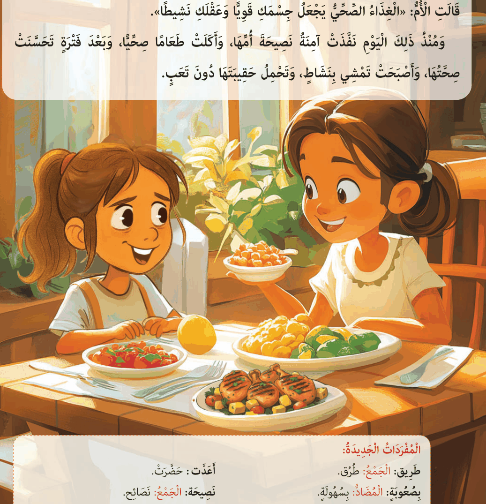
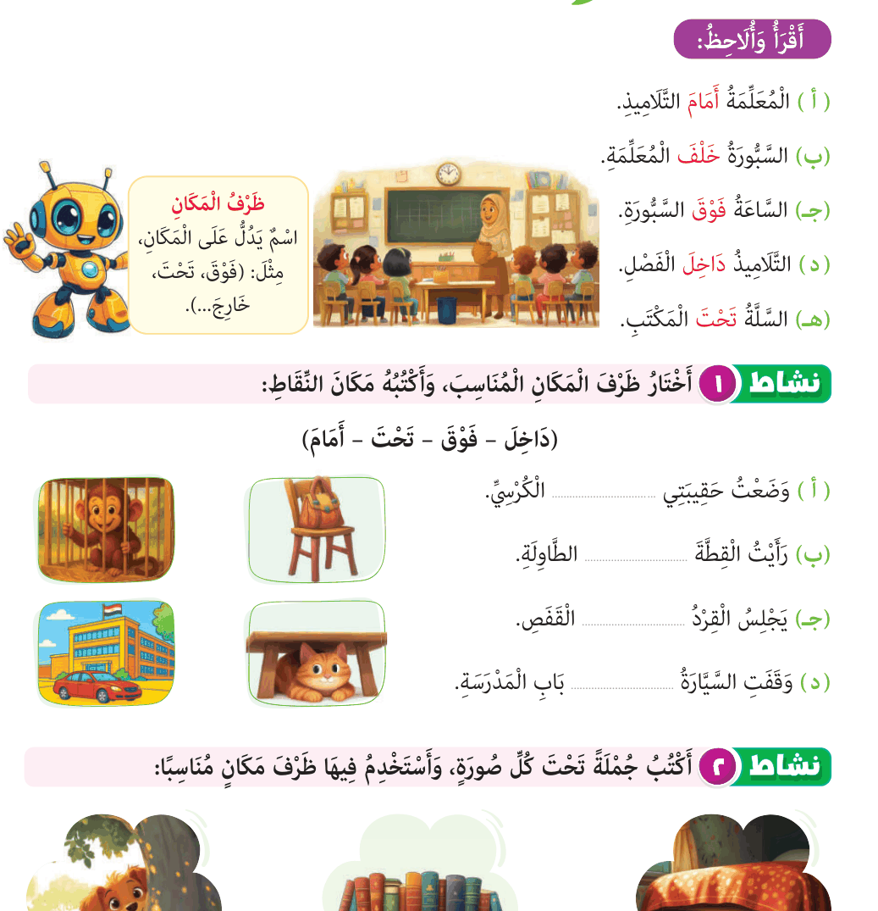
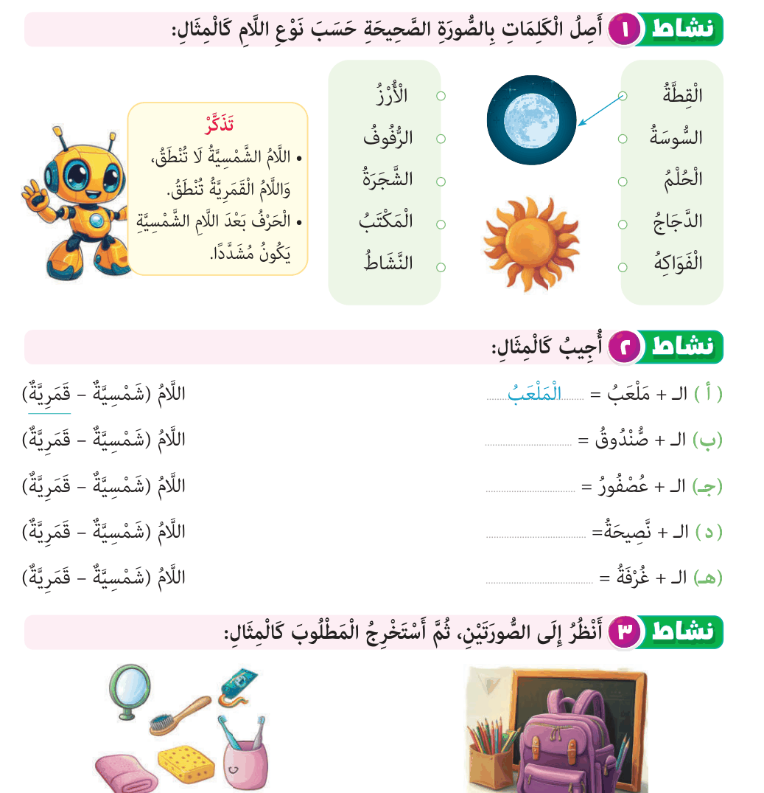

✨ عربي تانية ابتدائي • الوحدة الثانية
الوحدة الثانية: طعامي الصحي (الهرم الغذائي وغزال في ورطة)
منهج اللغة العربية الصف الثاني الابتدائي • الغذاء الصحي • ظرف الزمان والمكان • اللام الشمسية والقمرية
🥗نص القراءة: طعامي الصحي (الهرم الغذائي المتوازن)

📸كتاب الوزارة: طبق الطعام الصحي المتكامل (نشويات، بروتينات، خضروات وفواكه)
لكي ينمو جسمي بصحة وقوة، يجب أن يحتوي طعامي على عناصر غذائية متوازنة: الخضروات والفواكه تمدنا بالفيتامينات، واللحوم والبيض بالبروتينات لبناء العضلات، والخبز والأرز بالنشويات لمنحنا الطاقة.
🦌القصة المصورة: غزال في ورطة

📸كتاب الوزارة: قصة الغزال الصغير وأهمية الاستماع لنصائح الكبار والتعاون
⏰الأساليب: ظرف الزمان وظرف المكان

📸كتاب الوزارة: تدريبات ظرف الزمان (صباحاً، مساءً) وظرف المكان (فوق، تحت، أمام، خلف)
ظرف الزمان: اسم يدل على زمن حدوث الفعل (يذهب التلميذ إلى المدرسة صباحاً).
ظرف المكان: اسم يدل على مكان حدوث الفعل (يقف المعلم أمام التلاميذ، العصفور فوق الشجرة).
☀️القواعد الإملائية: اللام الشمسية واللام القمرية 🌙

📸كتاب الوزارة: التمييز بين اللام التي تُكتب ولا تُنطق (شمسية) والتي تُكتب وتُنطق (قمرية)
اللام الشمسية
تُكتب ولا تُنطق، والحرف بعدها مشدد (الشَّمْس، التَّفاح، الصَّباح)
اللام القمرية
تُكتب وتُنطق، وعليها سكون (الْقَمَر، الْكِتاب، الْوَلَد)